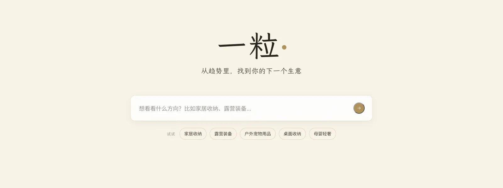

PROJECT NOTES / 2026.05 – 2026.06
Yili: Product Selection Agent
An e-commerce selection agent that reads demand on social media and supply on 1688

Yili is a product-selection agent for e-commerce sellers. Type a direction, such as desk storage or camping gear, and it reads both sides of the market: what people are asking for on social media, and what suppliers on 1688 already sell. Then it scores the gaps between the two and writes a selection report.
Behind the page is a 19-node LangGraph workflow. It first checks whether the category holds up and who it is for, then plans which steps and weights fit the data at hand. If the gap analysis or the rule filter leaves too little to work with, it can re-plan once instead of forcing an answer. DeepSeek handles extraction, planning and scoring, and Doubao evaluates the direction and writes the recommendations. I ran it end to end on 5 categories, with 290 posts and 344 listings, and the backend has 181 tests.
The report streams in over SSE while the agent works. On screen it looks like a stack of warm paper, and each sheet turns from pencil to ink as its step finishes. The live demo is offline for now, so this page shares the design and the thinking instead of a working link.